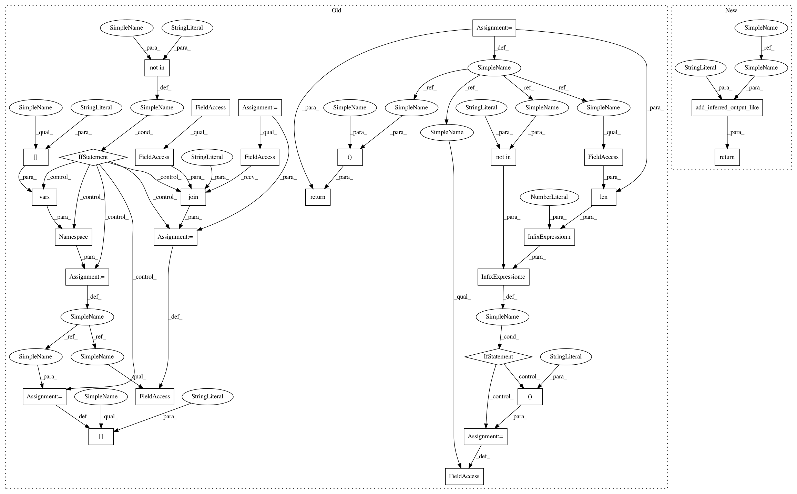

9b83ed91a09cd9dacbd07f848bc7a515b93b1a06,niftynet/application/regression_application.py,RegressionApplication,add_inferred_output,#RegressionApplication#Any#Any#,294
Before Change
eval_param)
def add_inferred_output(self, data_param, task_param):
if "inferred" not in data_param:
inferred_param = Namespace(**vars(data_param["REGRESSTARGET"]))
inferred_param.csv_file = os.path.join(
self.action_param.save_seg_dir, "inferred.csv")
data_param["inferred"] = inferred_param
if "inferred" not in task_param or len(task_param.inferred)==0:
task_param.inferred = ("inferred",)
return data_param, task_param
After Change
eval_param)
def add_inferred_output(self, data_param, task_param):
return self.add_inferred_output_like(data_param, task_param, "output")
In pattern: SUPERPATTERN
Frequency: 3
Non-data size: 29
Instances
Project Name: NifTK/NiftyNet
Commit Name: 9b83ed91a09cd9dacbd07f848bc7a515b93b1a06
Time: 2018-02-15
Author: eli.gibson@gmail.com
File Name: niftynet/application/regression_application.py
Class Name: RegressionApplication
Method Name: add_inferred_output
Project Name: NifTK/NiftyNet
Commit Name: 9b83ed91a09cd9dacbd07f848bc7a515b93b1a06
Time: 2018-02-15
Author: eli.gibson@gmail.com
File Name: niftynet/application/classification_application.py
Class Name: ClassificationApplication
Method Name: add_inferred_output
Project Name: NifTK/NiftyNet
Commit Name: 9b83ed91a09cd9dacbd07f848bc7a515b93b1a06
Time: 2018-02-15
Author: eli.gibson@gmail.com
File Name: niftynet/application/segmentation_application.py
Class Name: SegmentationApplication
Method Name: add_inferred_output
Project Name: NifTK/NiftyNet
Commit Name: 9b83ed91a09cd9dacbd07f848bc7a515b93b1a06
Time: 2018-02-15
Author: eli.gibson@gmail.com
File Name: niftynet/application/regression_application.py
Class Name: RegressionApplication
Method Name: add_inferred_output